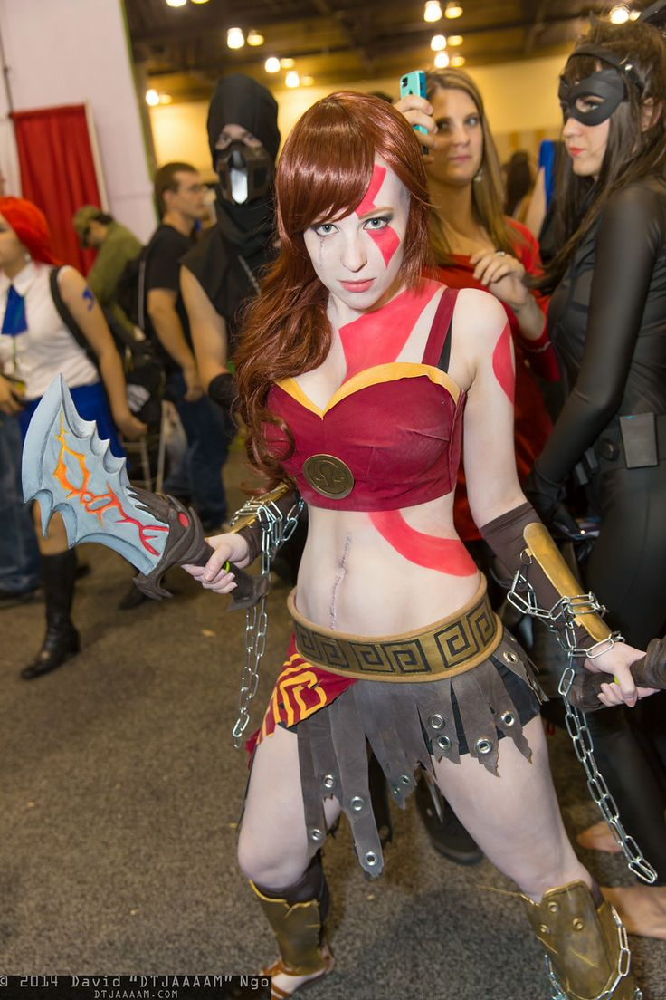

Аниме в России
На эту тему можно говорить очень долго, ведь история аниме в нашей стране началась ещё в далёком 1969г, когда вышла картина Хаяо Миядзаки "Корабль Призрак". Далее была "Сейлор Мун" и ещё несколько интересных проектов. Именно с этого момента в России становятся популярны косплеи(переодевания в известных персонажей).


И конечно, с появдением поклонников, появляются и ненавистники аниме культуры. Быстрые перемены в обществе многие были восприняты в штыки. Начинается травля.
В 2002 в России выходит культовое аниме "Унесённые призраками", а в 2006 - "Ходячий замок". Аниме, несомненно, гениальные, однако, не все их так восприняли, что повлекло ещё большее гонение любителей японской анимации.
Аниме магазины вносят серьёзный вклад в развитие кльтуры аниме в РФ, однако начинается противостояние этой аниме культуре со стороны людей,которые воспринимают чужие интересы как "попытка оккупации" через "распространение японской пропаганды".


2012 год стал прекрасным годом для анимешников и геймеров. И хотя надежды на конец света не оправдали себя, появилось множество закрытых вечеринок, на которые без косплея не попадёшь. Поспособствовало этому так же появление большего количества аниме магазинов. Но это так же повлекло за собой новую волну ненависти к аниме. Анимешников избивают, чмырят. Парней,которые говорят,что смотрят аниме девушки сторонятся ,ибо такие парни - странные. А пацаны избивают причисляя их к людям нетрадиционной сексуальной ориентации.

С 2014 анимешникам стало проще жить, ведь именно в этом году прошел первый Комикон. Это очень крупный косплейерский фестивать. Для любителей аниме это стало свежим глотком воздуха, ведь теперь им не надо было бояться за свои костюмы и здоровье хотя бы на время фестиваля. а в 2017 в России вышел фильм Макото Синкая "Твоё имя", который в РФ собрал больше, чем "Унесённые призраками" в Японии. Показатель ошеломляющий, ведь это означает, что это аниме посмотрело больше 50 млн. человек в России, и многим оно понравилось. Вследствие этого в европейской части России градус ненависти к анимешникам снизился. Многие наконец-то поняли,что аниме бывает разное и каждый может найти в этом что-то для себя.
В настоящее время гонения на анимешников не прекратились, но стали гораздо мягче. Чаще всего это выливается просто в словесную перепалку а размеры уменьшились с повсемесных, до локальных. Всё-таки я надеюсь, что люди наконец начнут уважать хобби других и хотя бы перестанут оскорблять и унижать за подобное. Ведь все мы люди и должны иметь право на развлечение